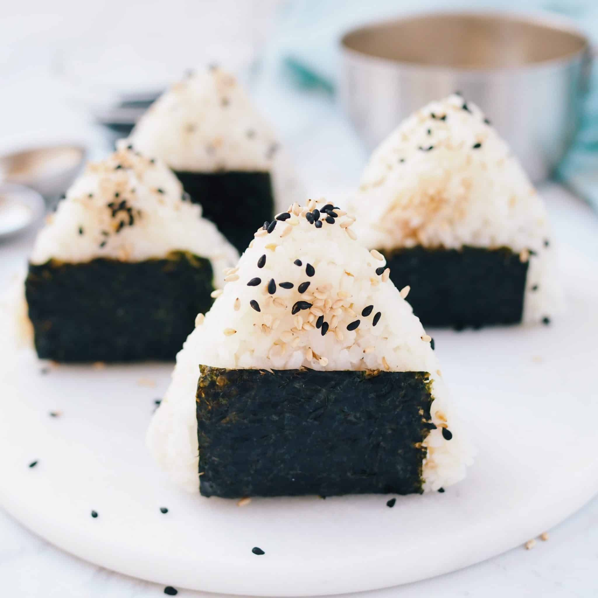

Tuna onigiri ( まぐろおにぎり )

What is Tuna onigiri?
Tuna onigiri are Japanese rice balls made of steamed rice that have been compressed into a triangular, ball, or cylinder shape and are usually wrapped in nori seaweed sheet. They can be flavored lightly with just salt or filled with a variety of fillings.
In this recipe we'll be making a tuna and mayo filled onigiri with lots of flavor!
This recipe makes four servings (and you have left over tuna salad for another batch).
Ingredients
- 2 2/3 cups cooked Japanese rice
- 1 can of tuna (well drained)
- 1/2 teaspoon of kosher salt
- 1 teaspoon of garlic powder
- 1 teaspoon of onion powder
- A pinch of sugar
- A pinch of black pepper
- 1 tablespoon of mayo
- 1 sheet of nori or 1 pack of nori squares
- Optional: Hot sauce
- Optional: Sushi vinegar
- Optional: 4 teaspoons of black sesame seeds
Steps
- In a bowl mix the drained tuna, salt, garlic powder, onion powder, pinch of sugar, pinch of white pepper and mayo. Mix well until all ingredients are incorporated into a homogenous paté.
- Optional step: If desired, add hot sauce to the mix for spicyness.
- Cut your sheet of nori vertically first. Then cut the pieces horizontally to create small strips to wrap around the base of your onigiri. If instead you have packets of small square nori sheets, just cut them in half.
- Optional step: For some added tangy flavor, add 3 tablespoons of sushi vinegar to the rice, mix and fluff the rice.
- Divide your cooked rice in four parts and set it aside.
- Wet your hands and sprinkle a little salt on your palm, then with wet hands grab 1/3 cup of cooked rice. Roll it into a ball and flatten it.
- Place 2 teaspoons of tuna mixture into the center of the rice. Push the tuna mixture into the rice ball with your thumbs. This prevents the tuna from seeping out.
- Seal the tuna filling with your rice, shaping it back into a ball with the help of wet hands. Then shape the onigiri into a triangle using your palms and fingers.
- (pro tip: Remember to wet your hands and sprinkle a little salt on the palm every time you make a new onigiri. You will also end up with leftover tuna salad, so you can cover the bowl with film and reserve it in the fridge, as it keeps for 3-4 days.)
- Place your nori strip on a clean plate, then place your triangle overtop in the middle and wrap the edges upwards to stick to the rice. Enjoy!